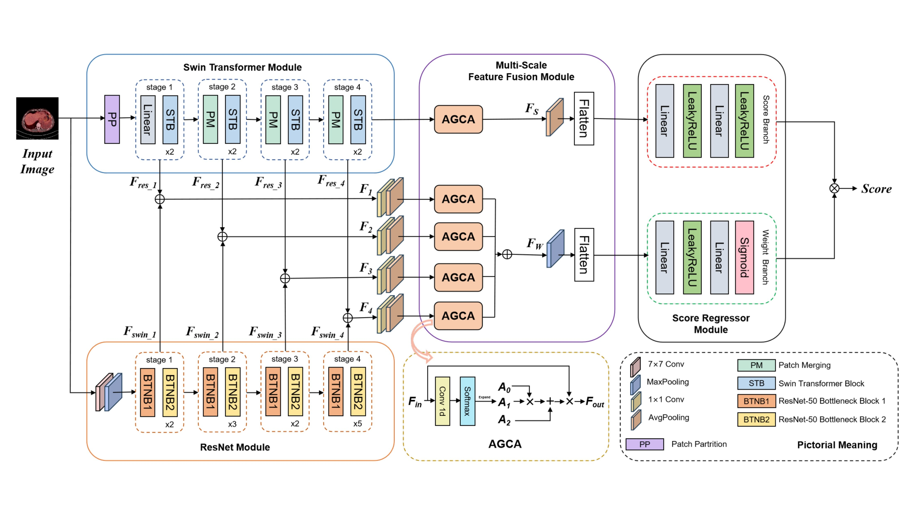
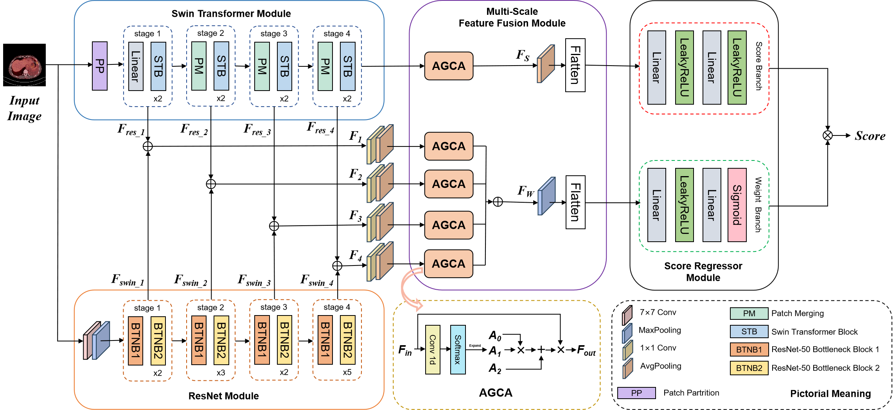
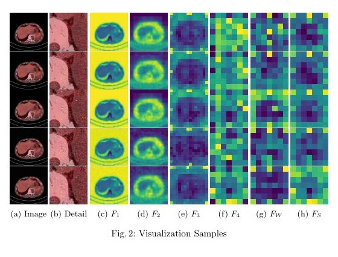

Abstract
Overview
PET/CT quality varies with acquisition conditions and directly affects clinical interpretation. MS-IQA is a no-reference model designed for this multimodal setting. It extracts local texture with a convolutional backbone and long-range context with a Swin Transformer, aggregates features through attention-guided multi-scale fusion, and jointly estimates a quality score and its weighting. A dedicated PET/CT image-quality dataset and broad experiments support reliable prediction across scanners, doses, and anatomical regions.
01 · Figure
MS-IQA combines complementary ResNet and Swin Transformer features across multiple scales, then predicts PET/CT quality with separate score and confidence branches.

02 · Figure
Multi-Scale Dual-Backbone Design

03 · Figure
Feature Visualization

Citation
BibTeX
@inproceedings{li2025msiqa,
title={{MS-IQA}: A Multi-Scale Feature Fusion Network for PET/CT Image Quality Assessment},
author={Li, Siqiao and Hui, Chen and Zhang, Wei and Liang, Rui and Song, Chenyue and Jiang, Feng and Zhu, Haiqi and Li, Zhixuan and Huang, Hong and Li, Xiang},
booktitle={Medical Image Computing and Computer Assisted Intervention},
year={2025}
}